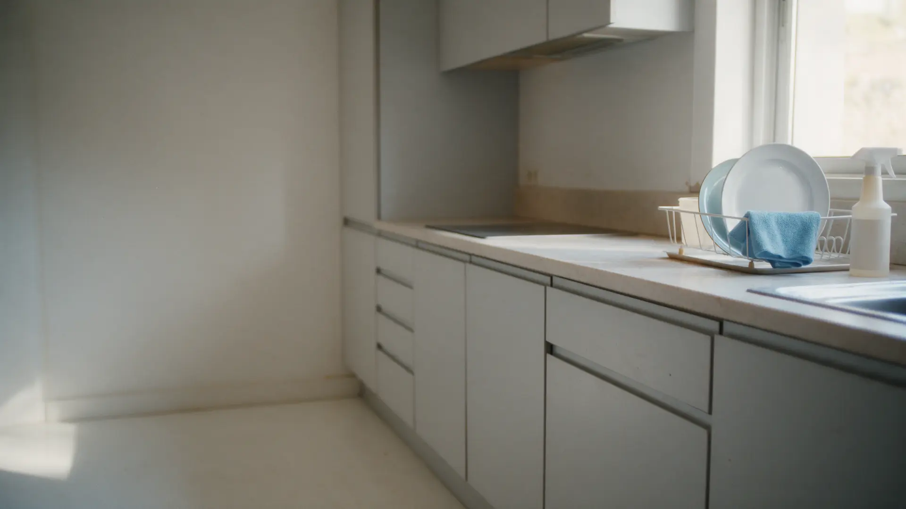

Клининг · Ростов-на-Дону · круглосуточно
Уборка квартир и химчистка мебели в Ростове-на-Дону
Генеральная уборка и химчистка мягкой мебели. Мастер приезжает со своим оборудованием, работаем круглосуточно.

- Работаем круглосуточно
- Мастер приезжает со своим оборудованием
- Генеральная уборка и химчистка мягкой мебели
Услуги
Цены на карточке на Яндекс.Картах не указаны. Стоимость называют по телефону: везде «уточнить».
Что делаем
- Генеральная уборка квартирыуточнить
- Уборка квартирыуточнить
- Химчистка мягкой мебелиуточнить
- Химчистка коврауточнить
Стоимость зависит от площади и размера мебели, её называют по звонку.
Как заказать
- 01
Звонок
Звоните по номеру: что нужно убрать или почистить и адрес.
- 02
Стоимость и время
Называем цену и согласуем день, работаем круглосуточно.
- 03
Работа на месте
Приезжают мастера со своим оборудованием.
- 04
Приёмка
Проверяете результат и оплачиваете работу.
Что важно знать
Круглосуточно
Режим работы на карточке Яндекс Карт: круглосуточно.
Своё оборудование
Мастер приезжает со своим оборудованием.
Бережно к мебели
Мебель чистят специальными средствами, ткань не повреждается.
Отзывы клиентов
40 отзывов на Яндекс Картах, средняя оценка 5,0.
Отзывы с Яндекс.Карт
«Отлично выполнили свою работу, испачкал дорогой диван и уже не надеялся отмыть, как вдруг наткнулся на эту компанию, сработали оперативно и чисто.»
Мирон Горюнцов · 24 августа 2025
«диван после чистки выглядит как новых-все пятна исчезли,запах свежий,ткань не повреждена.Мастер приехал со своим оборудованием,всё очень понравилось,рекомендую 👍»
Рузана И. · 25 мая 2025
«Отличная клининговая компания. Заказывала генеральную уборку и хим.чистку мягкой мебели. Всё сделали на высшем уровне.»
Евгения. · 28 августа 2024
Отзывы с карточки на Яндекс.Картах, без правок.
Контакты
- Адрес
- проспект Ленина, 134, Ростов-на-Дону
- Часы
- круглосуточно
- Телефон
- +7 (904) 505-56-46